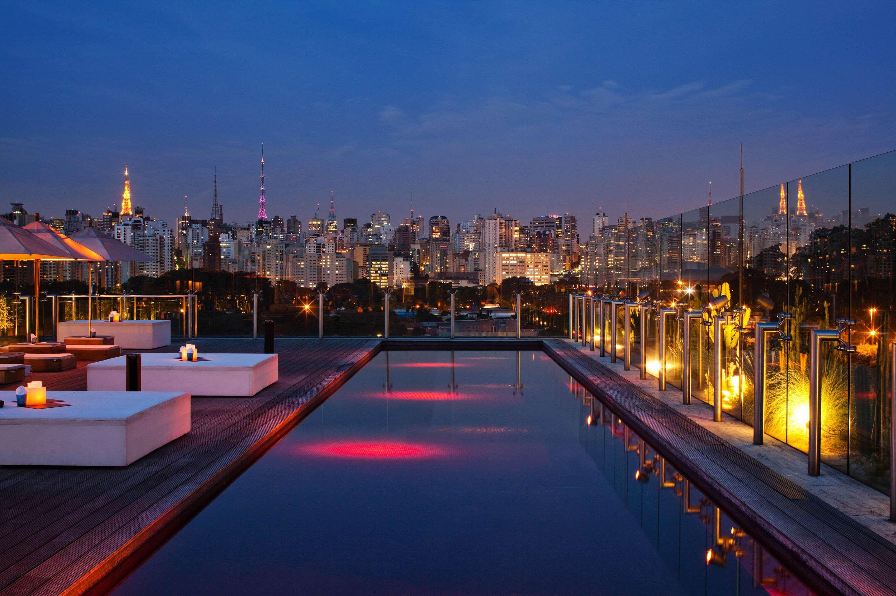

Nocchio All Inclusive Hotel
Esse resort de luxo oferece uma experiência única, combinando conforto, diversão e um toque de natureza exuberante.

Esse resort de luxo oferece uma experiência única, combinando conforto, diversão e um toque de natureza exuberante.
O Nocchio All Inclusive Hotel, situado na Avenida Dr. Mariano, 23, no Jabaquara, é um refúgio luxuoso que combina sofisticação e entretenimento. Esse resort, cercado por paisagens exuberantes, oferece uma estadia inesquecível para quem busca conforto e diversão em um ambiente tropical. O hotel conta com 250 quartos e suítes elegantemente decorados, com um design contemporâneo e toques rústicos que harmonizam com a natureza ao redor. Todas as acomodações possuem varandas com vistas panorâmicas do mar ou dos jardins exuberantes, além de banheiras de hidromassagem e serviço de quarto 24 horas. O Nocchio é conhecido por sua gastronomia de excelência, com seis restaurantes exclusivos. Os hóspedes podem saborear desde pratos gourmet de alta gastronomia internacional até opções regionais autênticas, com ingredientes frescos e orgânicos colhidos na própria horta do resort. Além disso, há bares espalhados por todo o hotel, oferecendo drinks exóticos e coquetéis artesanais.
Por pessoa
R$ 1.200Em até 8x sem juros
8x de R$150,00

Jabaquara
São Paulo - SP